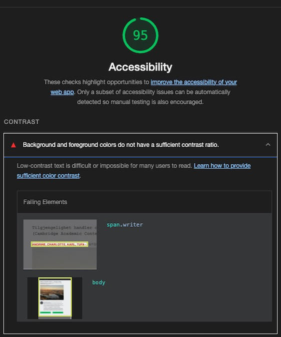
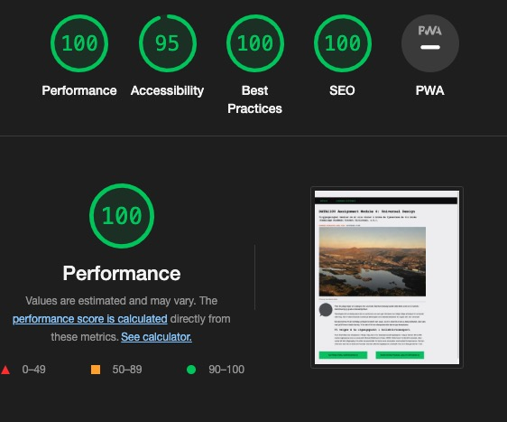

Learning Outcomes
After completing this course, the student has defined the following learning outcomes in the form of knowledge, skills and general competence:
Knowledge
students:
- knows the central role that the web and the internet have in modern data processing
- is familiar with relevant programming tools and repositories with version control
- has basic knowledge of and experience with collaboration in software development as a form of work
Skills
Students:
- can create user-friendly and universally designed solutions in line with legislation
- build webpages with the key technologies for web (HTML, CSS)
- can use current development tools and version control
- can plan, organize and implement smaller IT projects
General competence
Students:
- can communicate the result of a development work
- can collaborate in groups  